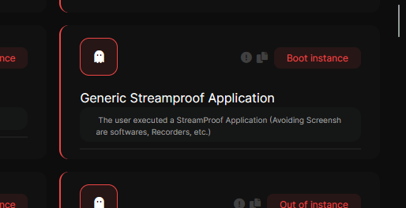
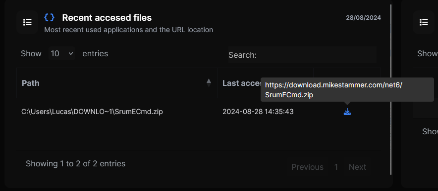
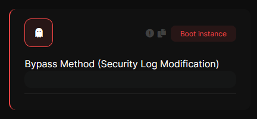
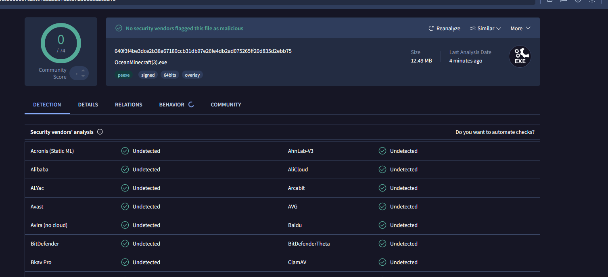

Changelog - версия 2.6
Будущее начинается здесь.
Автор: Almaz Ganiev v2.6
Информация
Спустя долгое время CLOA снова был обновлен с точки зрения функций, Интернета и производительности.
Stream Proof Detect
We introduce a new function that allows to detect cheats by this task (Frequently used in Cheats and Bypass). This feature is particularly effective against cheats that are designed to evade recordings by not being visible in screen capture programs (OBS, Nvidia Recorder, etc). Ocean now has the ability to detect these hacks and bypasses despite their design to hide in recording environments.

Analysis of Forensic Artifacts
Added the ability to perform detailed analysis of forensic artifacts, including Master File Table (MFT), $LogFile, among others, for more thorough incident investigation.
Improved Detection and New Checks
Detection capabilities have been optimized and expanded with the addition of more than 10 new types of checks that counter known bypasses, improving scanning accuracy and coverage.
File Download with Identifier
It is now possible to download and view files with identifiers from the original URL on the website, facilitating access to specific data and verification of file legitimacy.

These will be reflected in a table in the PIN results section, showing the file name along with a download button and corresponding link.
Journal Speed
The USN Journal is a feature of the NTFS file system in Windows that records all changes to files and directories on a partition. Each time a file or directory is modified, an entry is created in the USN Journal detailing the type of change, such as creation, deletion, modification, or renaming.
The function responsible for verifying and displaying the USN Journal is now natively implemented. This update allows for greater efficiency and speed in the verification process, significantly improving performance when handling and analyzing USN Journal records. With this optimization, scanning and displaying changes to the file system is faster and more efficient, providing a more streamlined and fluid experience for users.
Event Log Detects
This Event Log Modification Detection feature in Ocean provides a comprehensive analysis of system event logs to identify unauthorized or suspicious changes. This feature examines Windows Event Viewer logs for alterations, deletions or tampering that could indicate cover-up attempts or malicious activity. By monitoring and analyzing modifications to event logs, Ocean improves the ability to detect and respond to security incidents, ensuring the integrity and reliability of system event data. This feature is essential for auditing and forensic analysis, as it helps identify and track possible attempts to hide activities or make covert modifications to the system.

Новый стиль сайта

Оферта была изменена.
Custom Presence
The new Custom Presence feature in Ocean allows users to create custom configurations to detect cheats, including those with rebuild techniques. This feature allows users to define their own signatures or file presences to track specific cheats, ensuring that, even if they have been modified or rebuilt, they will still be detected for a long period of time. This means that cheats that have been altered to evade traditional detection will still be identified until significant changes are made to the cheat application. Custom Presence works like a traditional Ocean “file presence”, but with the flexibility to be configured by users to suit specific evolving cheat detection needs.
This feature is enabled in both Personal Free and Enterprise licenses.
No More False Flags
With this latest update the Ocean program will no longer have false alerts in security software such as VirusTotal or others.

- By: Almaz Ganiev CLOA